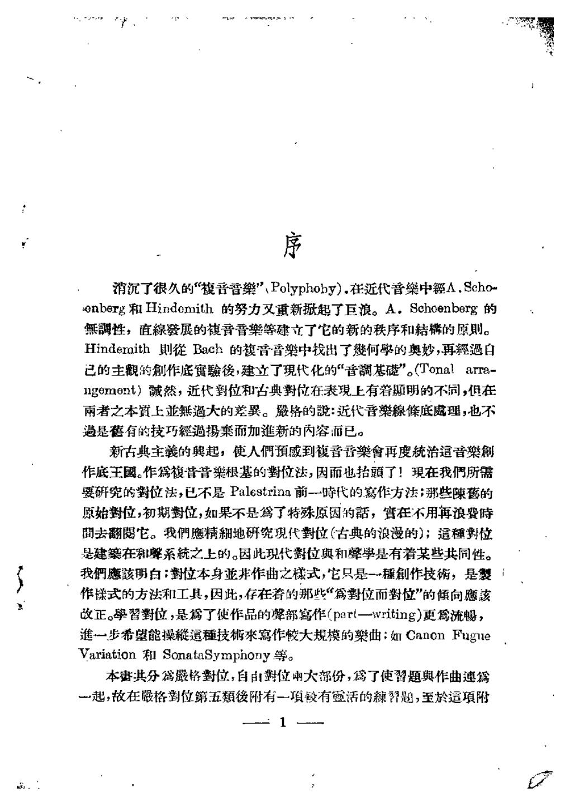

PDF 第 3 页
序
消沉了很久的“復音普樂”Polyphoby）.在近代音樂中额A.Scho
enberg和Hindomith的努力叉重新起了巨浪。A。Schoenberg的
無性，直線發展的音晋樂等建立了它的新的秩序和結的原则。
Hindemith则徙Bach的馥音音樂中找出了何學的奥妙，再經過自
己的主觀的創作庭寶驗後，建立了現代化的“音調基”。（Tona！ara-
ngement）誠然，近代對位和古典对位在表現上有着题明的不同，但在
雨者之本上业無過大的差巽。殿格的：近代音樂線條底處理，也不
過是舊有的技巧經過摄而加進新的内容而已。
新古典主義的與起，使人們预感到夜音言樂會再度統治這音樂
作底王國。作写復音音樂根基的對位法，因而也抬頭了！現在我們所
要研究的對位法，已不是Palestrina前一時代的寫作方法；那些陳蓄的
原始對位，初期對位，如果不是為了特殊原因的話，實在不用再浪費时
間去翻朗它。我們應精地研究現代對位（古典的浪漫的）；這種数位
是建在和聲系统之上的。因此现代對位與和聲学是有着某些共同性。
我們應該明白：對位本身非作曲之樣式，它只是一種創作技，是裂
作樣式的方法和工具，因此，存在着的那些“篇對位而對位”的倾向應該
改正。學習對位，是為了使作品的聲部寫作（part一writing）更為流畅，
進一步希望能操這種技來寫作大规模的樂曲；如CanonFugne
Variation和SonataSymphony等。
本妻共分為格對位，自由對位兩大部份，為了使習题與作曲連
一起，故在格對位第五類後附有一填较有靈活的暂题，至於运填附
- 对位规则依附于当时的调式与和声语言
分类对位不是超历史的自然法。文艺复兴调式、巴洛克大小调与二十世纪音高组织，会改变什么算协和、什么算必须解决的 dissonance。
“近代對位和古典对位在表現上有着题明的不同，但在雨者之本上业無過大的差巽。”